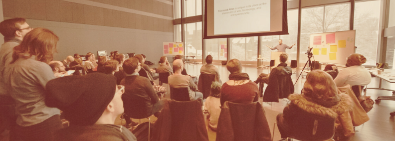

Consciously Produced LLC, founded by Ariane Michaud, specializes in creative productions—ranging from conferences and podcasts to dance and theater performances. With a commitment to fostering connection and community, we bring a thoughtful approach to every project, ensuring each endeavor leaves a lasting impact.
We offer more than technical expertise; we help shape narratives that truly resonate.
Dance & Theater
Conferences
Events
Podcasts
Company Retreats
Fundraisers
and more...
Dance & Theater
Conferences
Events
Podcasts
Company Retreats
Fundraisers
and more...

In addition to our versatile event productions, we specialize in crafting experiences that are tech-forward and cross-disciplinary. We love finding connections that are maybe not so obvious to others, like our current projects with dance and robots.
Location Independence
Based on the East Coast, we operate with a location-independent mindset and are always open to new horizons for the right project.
Collaborative Approach
We view our clients as collaborators, not patrons. We work hand in hand with you to craft an experience that authentically represents your vision. Your input is not just valued; it's essential.
Flexible Roles
We can serve as consultants, partnering producers, or full-event producers—roles that will be determined during our initial meetings. As needed, we can also curate a project team of industry experts tailored to your vision.